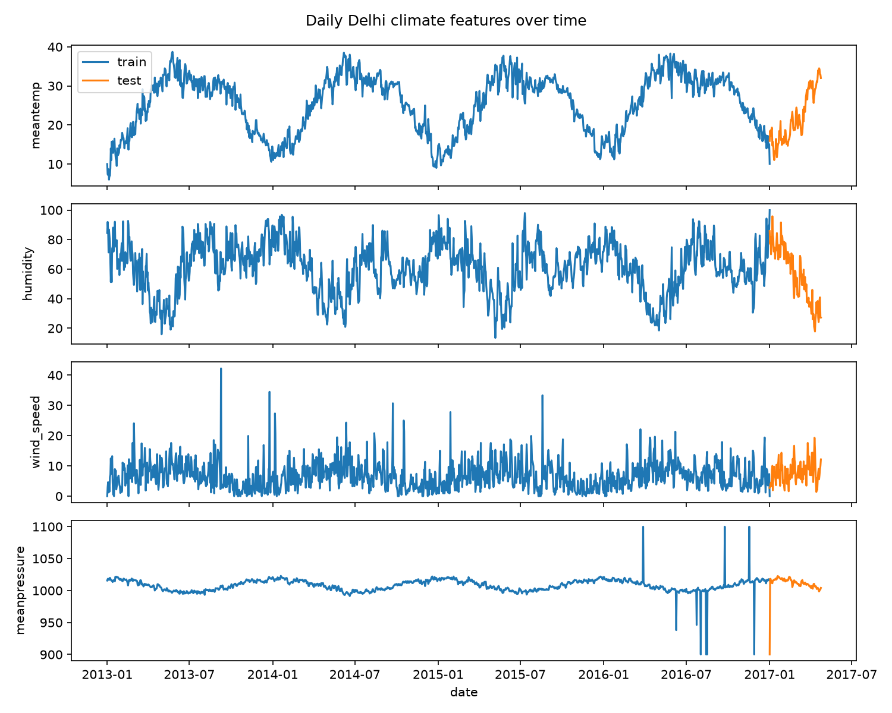
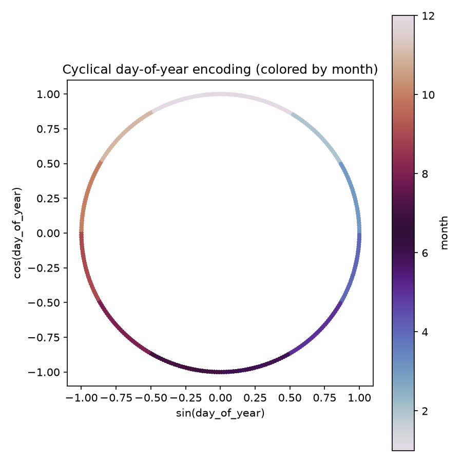
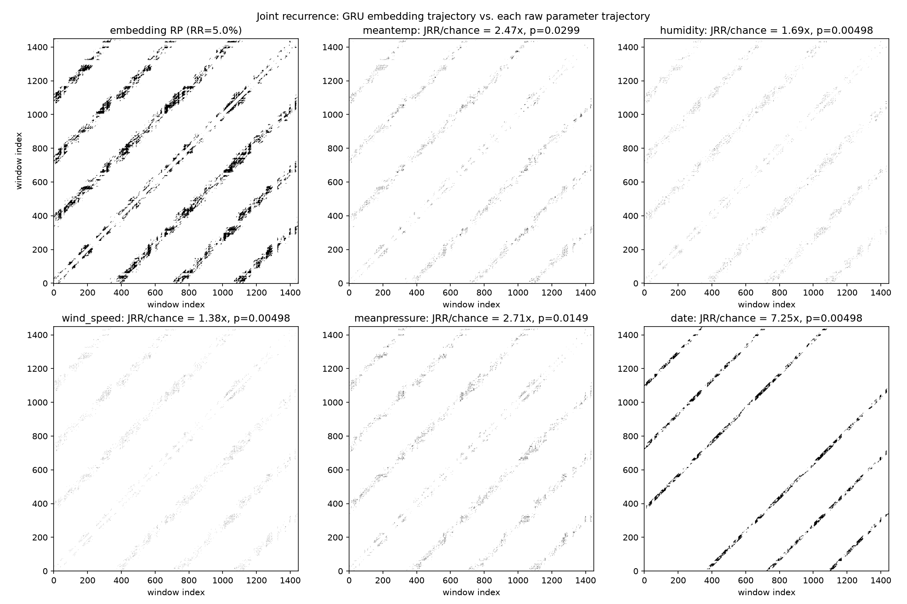
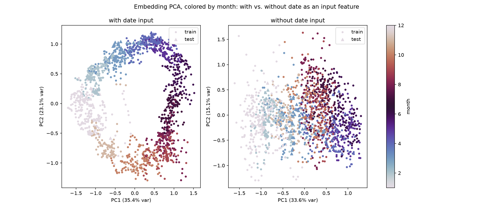
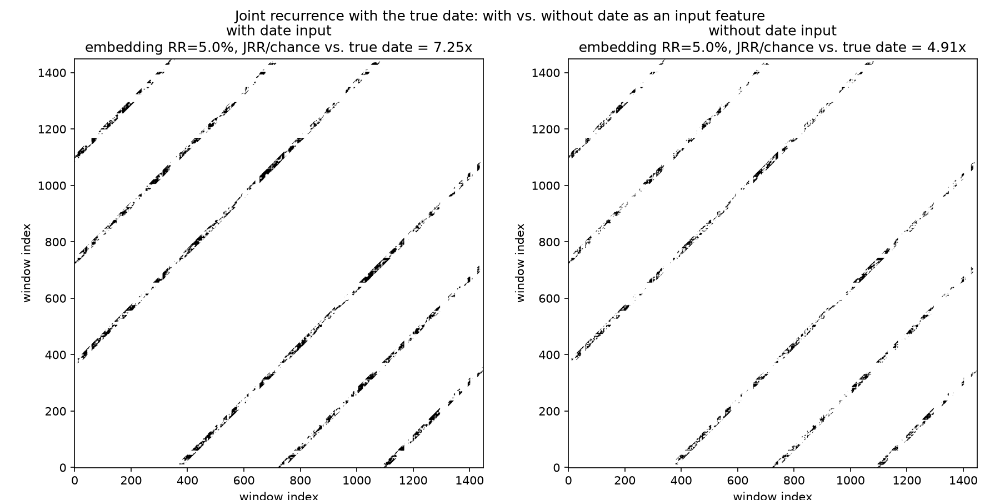

Method
Data and model. Four climate variables plus a sin/cos encoding of day-of-year (so Dec 31 and Jan 1 sit next to each other) form a 14-day rolling window. A GRU encoder compresses each window to a 32-dimensional hidden state; a GRU decoder reconstructs all 14 days from that state alone. Windows are stride-1 and chronological, so the day-by-day embeddings form a trajectory through 32-dimensional space (~1449 points).


Why recurrence. Recurrence plots (Eckmann et al., 1987) were used instead of Lyapunov exponents or full attractor reconstruction because they work on short, noisy real-world data without choosing an embedding dimension or delay; they need only pairwise distances and a recurrence threshold (set here so the embedding's recurrence rate is 5%).
- Recurrence plot: shows whether a trajectory revisits earlier states in a structured way (for example, periodically) or randomly.
- Joint recurrence plot: checks whether two trajectories, the embedding and a raw variable, revisit similar states at the same time, which is consistent with a shared driver (such as the seasonal cycle). The statistic reported is JRR/chance, the joint recurrence rate divided by the rate expected under independence.
- Takens' theorem: motivates one experiment. A delayed view of the observed signals alone can, in principle, reconstruct a hidden driver like "season." So the model was retrained with date removed, to check whether seasonal structure survives.
Statistical controls.
- Theiler window (14 days): windows less than 14 days apart share raw input days and would look recurrent from overlap alone, so such pairs are excluded from every recurrence count.
- Circular time-shift surrogates (n=200): each variable is time-shifted 200 ways to build a null distribution, giving a p-value and z-score. Shifts near one year are excluded, since they would reproduce the true seasonal alignment instead of a null case.
- Bonferroni correction: five variables tested, so α = 0.05/5 = 0.01.
Results
1. PCA. The embeddings trace an annual loop in the first two principal components (~58% combined variance), with the months in order around it (pictured above). This is suggestive, not conclusive.
2. Joint recurrence. JRR/chance: date 7.25×, pressure 2.71×, temperature 2.47×, humidity 1.69×, wind speed 1.38×. Read on its own, this suggests date dominates the embedding's learned structure.

3. Date ablation. Retrained without date as an input, the JRR/chance against true date drops from 7.25× to 4.91× (lower, but still well above 1×), and the annual loop in the PCA largely disappears. Seasonal information therefore remains in the embedding without the date input. This is consistent with Takens' theorem but does not require it: the climate variables, temperature in particular, are seasonal on their own.


4. Surrogate testing. After Bonferroni correction, only humidity (z=5.88), wind speed (z=5.69), and date (z=2.15) stay significant (p = 0.00498 each, the minimum attainable with 200 surrogates, against α = 0.01). Pressure and temperature, despite larger raw ratios, do not survive (p = 0.0149 and 0.0299). Possible reasons: pressure's recurrence structure is patchy and event-clustered (note the spikes in its raw series), which inflates its null variance; temperature, like date, is strongly periodic, and for a periodic variable many shifted copies still partly phase-match, widening the null. The same effect would explain date's low z-score.
Joint recurrence between the embedding and the raw inputs is significant for 3 of 5 variables: humidity, wind speed, date. Ratio size and statistical significance disagree here, and the "date is the standout" reading does not hold: date remains significant, but with the smallest z-score of the three.
Robustness
An audit found the Theiler exclusion was one day wide instead of 14 days, inflating early numbers. Before fixing it, the window was swept across five sizes (0, 1, 14, 30, 60 days): rankings and rough magnitudes held at every size, only the exact values moved (date 7.81× → 7.25×). Two more bugs (a leap-year phase error in the date encoding, and an unseeded RNG) were fixed the same way, and every result was regenerated and reproduced bit-for-bit.
Summary
Recurrence plots, joint recurrence, and a Takens-motivated ablation indicate that the embedding encodes the seasonal cycle. Surrogate testing with Bonferroni correction overturns the naive reading of the ratios: humidity, wind speed, and date hold up statistically, while pressure and temperature, despite higher ratios, do not.